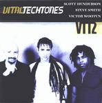

| Artist: | Vital Tech Tones |
| Title: | VTT2 |
| Label: | Tone Center TC-40082 |
| Length(s): | 56 minutes |
| Year(s) of release: | 2000 |
| Month of review: | [01/2002] |
| 1) | VTT | 1.33 |
| 2) | SubZero | 7.05 |
| 3) | The Litigants | 7.07 |
| 4) | Puhtainin' Tuh... | 5.18 |
| 5) | Drums Stop, No Good | 3.11 |
| 6) | Catch Me If U Can | 4.24 |
| 7) | Nairobe Express | 4.10 |
| 8) | Who Knew? | 7.13 |
| 9) | Time Tunnel | 4.38 |
| 10) | Chakmool-ti | 11.46 |
With SubZero we arrive at the kind of music that I would expect from a trio such as this, although the music is maybe a bit more "atmopsheric". The drummer Smith is really going at it on this one. Not really heavy or anything but varied and lightfooted he fills up all the holes left by the meandering Henderson while Wooten lays down some low bass rumbles. The guitar sound is rather high contrasting strongly with the other two instruments which operate in the lower frequencies. Notwithstanding the jamming feel to the track, it sounds to composed to be an improvisation, but every instrumentalists gets his place in the sun on this one with a rather long solo. What I like about this track is the etherealness of a large part of the track. In that sense it is not standard jazzrock.
On The Litigants, we hear more groove in the bass and drums, but also a bit less melody, less interesting ones I mean. This is more typical jazzrock in my opinion, although the guitar maintains part of its etherealness. On this track it seems the instruments take the fore one by one: the drums in the opening, then a bit of guitar and then Wooten shows off his fats playing technique. Very repetitive, almost minimal and extremely fast. Finally the song starts to rock a bit more.
Puhtainin' Tuh... opens slowly and bouncily. A bit of a reggae feel perhaps here. The song never gets to have much pace, but it does get heavier towards the end. Drum Stops, No Good is rather funky track with drums and bass. Its successor Catch Me I U Can lacks a bit of face melodically, but it does have a nice groovy drive. It is a up-beat track with the fast fingers of Wooten on bass, while the guitar is a bit different this time. At times the music has a bit of a Phish feel.
Nairobi Express opens with discordant squeaky sounds. Then we get an easy going piece of music with the bass up front and the guitar drawing long ethereal lines along the soundspectrum in the back. The music does have a certain roomy feel to it, like of the open savannah. The music also builds a kind of tension, and notwithstanding the tune that dominates the track, there is a sense of foreboding, but also a groove that never lets off.
Who Knew? opens moodily, maybe a bit of Stu Hamm here with the warm low bass sound. The guitar has that high ethereal sound again, something which makes the music less slick and more likable for me. A do like a few rough edges to keep it interesting. But of course, if you do not happen to like jazzrock at all, you probably will not appreciate it at all, because that is simply what it is. The melody has a bit of a Latin feel jere. The guitar solo builds up quite nicely building on itself instead of moving in arbitrary directions all the time. This is something I usually do not like about these guitar excursions.
Time Tunnel is an easy-going track with a bit of a country twang on the guitar. The song ends with noisy rock. Very nice. The rock 'n' roll that follows is a bit less interesting to say the least. But let them.
The final track is Chakmool-Ti and is also by far the longest. The track does not bring much news to the album though: it has its somewhat noisy meandering guitar, but wait...there is a soundscapish intermezzo in the middle there after which a moody melodic bass sets in. Nice.